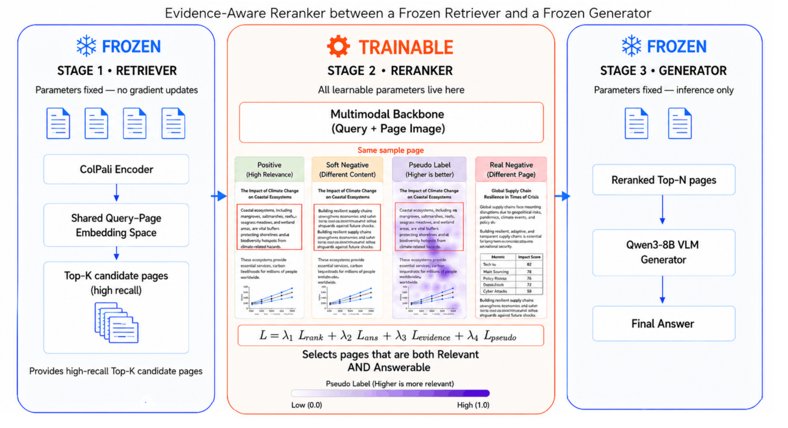

IEEE Access · 2026 · Multimodal RAG / Document QA
PARES
Page Answerability, Reranking, and Evidence-Supervised Selection for Multi-Page Multimodal Document Question Answering
Abstract
Research summary
Retrieval systems can select pages that are topically related but do not contain sufficient evidence to answer a question. PARES is a lightweight multimodal reranker designed to select answer-supporting pages efficiently.
Proposed method
Jointly models page relevance, answerability and patch-level evidence with bounding-box supervision and soft pseudo-evidence labels. It reranks retrieved pages before answer generation.

Experimental results
F1 and memory: published IEEE Access results. Processing time: project evaluation.
Research impact
Evidence-aware reranking can improve answer quality while lowering memory and processing requirements, making multi-page document QA more practical for resource-constrained systems.